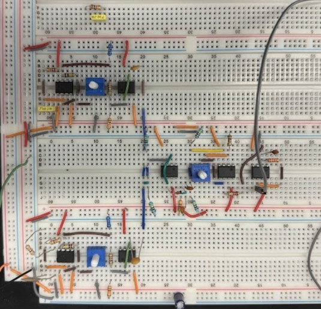
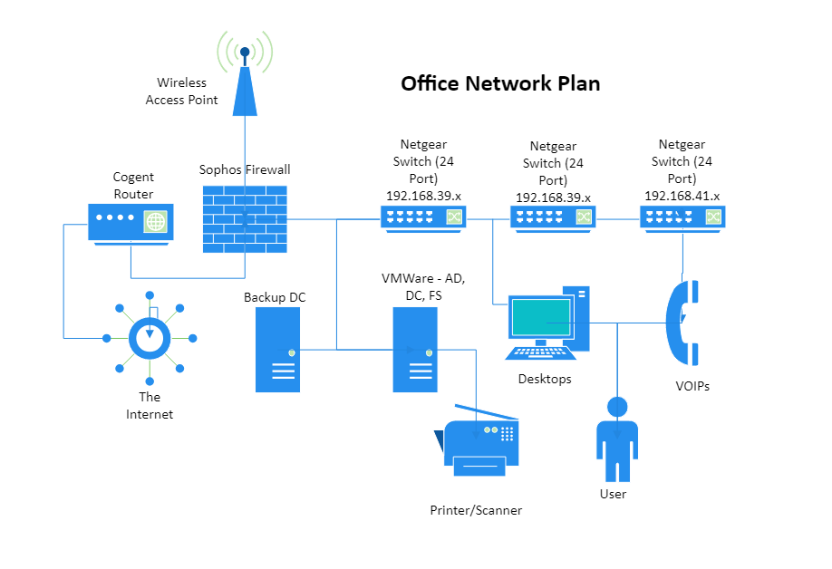

Projects
- Multi-Threaded Port Scanner | Python (Febrary 2025): A project made for Communication Networks, a class at Cooper Union. Project requirements included scans based on an input file, outputting results to a file, and haivng the options to specify hosts and ports to scan. Threading was implemented to make the program run scans in parallel and was able to increase overall speed of the program. The program utilizes socket, threading, and argeparse libraries from Python.
- AskTCB Chatbot | Python, NodeJS, Microsoft Azure OpenAI, Git (June 2024 – February 2025): Created for The Conference Board (a client of Ana’s Cloud) allowing users to preview TCB’s subscription-based content. Wrote a custom NodeJS script to parse through TCB’s various documents, vectorize its contents, and upload it to an Azure AI Search Index. Customized an open-source ChatGPT app to connect to the search index and a Microsoft Bing API, so user can query relevant topics to AskTCB. The chatbot now lives on TCB's homepage to be used by members of The Conference Board.
- Physics with Python | Python (December 2024): This experiment, part of Intro to Physics Lab at Cooper Union, used Python to create basic plots demonstrating wave interference and diffraction, phenomena first explored by Thomas Young. Simulations, created with Python's matplotlib and numpy libraries, provided a clearer visualization of his findings.
- Theremin | Electrical Engineering (December 2024): Sophomore Electrical Engineering Projects included reverse engineering and building a Theremin, a musical instrument that produces notes based on proximity to an antenna. Over the semester, components were assembled on breadboards, culminating in a functional Theremin for hands-on demonstration.
- Game Portfolio | C, Python, Git (Jan. 2024 – May 2024): Made games in Programming for Electrical Engineers, a basic computer science class at Cooper Union. Developed SOS, a game like Tic Tac Toe but with a greater degree of difficulty, programmed in C. Created Uno, the popular card game where friendships are destroyed, programmed in Python. Designed Wheel of Fortune, the well-known TV game show, programmed in Python.
- Network Diagram | Microsoft Visio (July 2023): Compiled documentation of network infrastructure at one of Ana’s mid-sized clients. Learned how each part of the client's environment interacted with the others. Utilized the diagram as a map whenever there is any potential internet outage.
You can find this project on my GitHub!
Check out AskTCB here!



